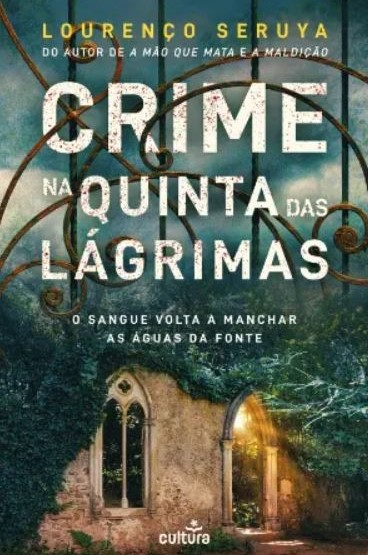

Escolheste mais respostas a)!
No livro “Crime na Quinta das Lágrimas”, somos apresentados a Alice e Diogo, um casal de noivos que escolhera a Quinta das Lágrimas para celebrar o casamento, estavam longe de imaginar o horror em que se tornaria o dia mais feliz das suas vidas. Contudo, na manhã do casamento, os convidados acordam em sobressalto: a noiva desapareceu. Não a encontram em parte nenhuma e rapidamente se dá início a uma busca pelo exterior da Quinta. O jardim está coberto por um frio gélido e o cadáver de Alice é descoberto em circunstâncias macabras... A chegada da Polícia Judiciária põe o hotel em alvoroço. Os inspetores estabelecem que o homicídio foi cometido por um dos hóspedes, mas as mentiras propagam-se e ampliam-se as suspeitas. Quem matou Alice? Assim que as evidências se encaixam e começam a formar uma imagem concreta, a polícia inicia uma corrida contra o tempo no encalço de um assassino que não ficará por ali...
 Compra em Português PT